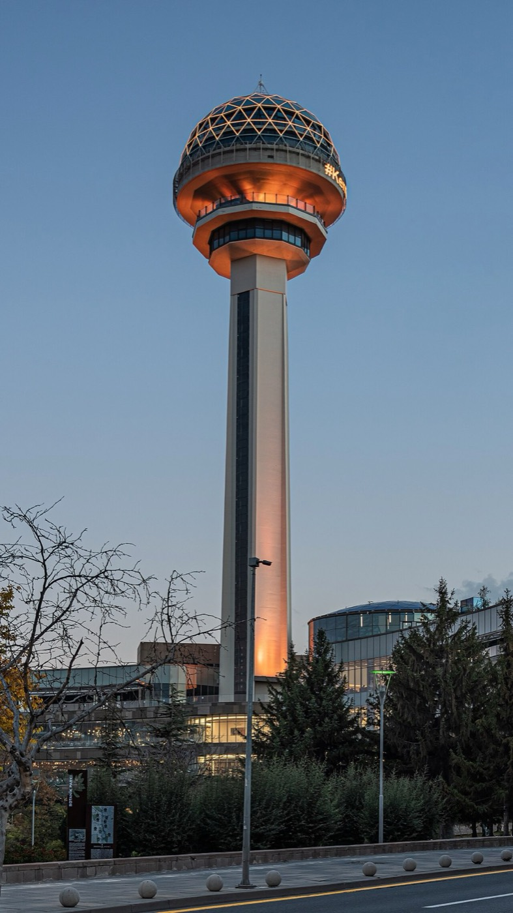
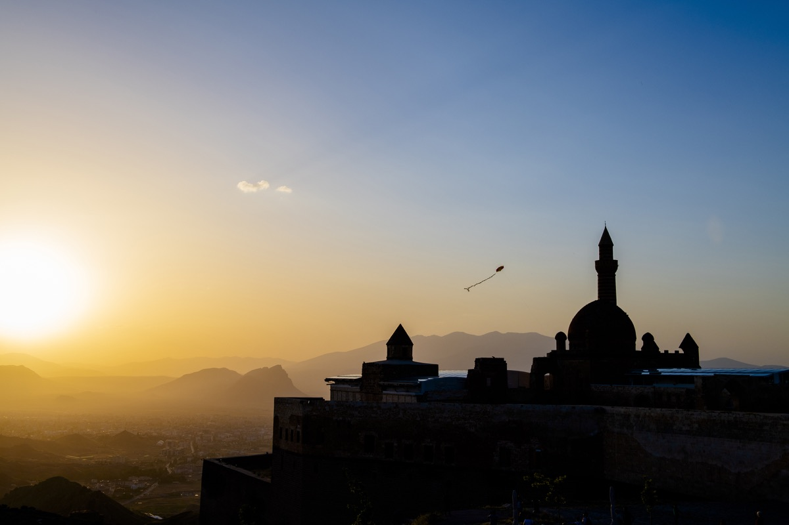
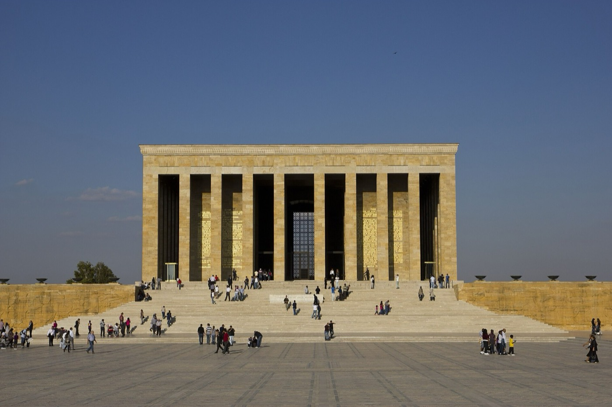
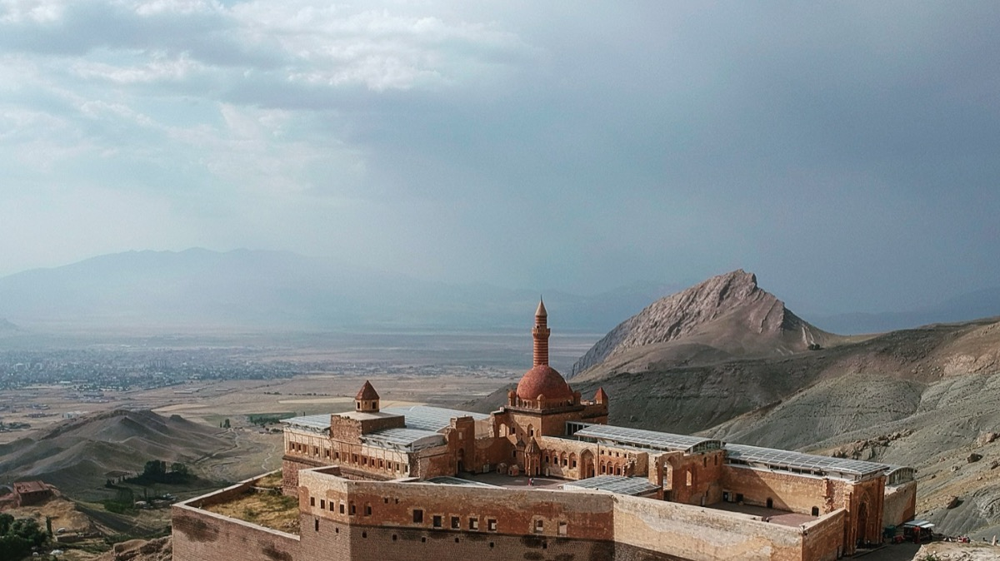
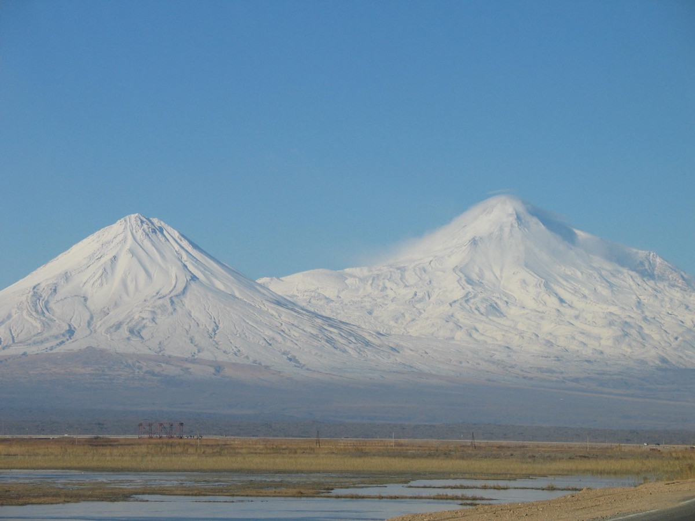
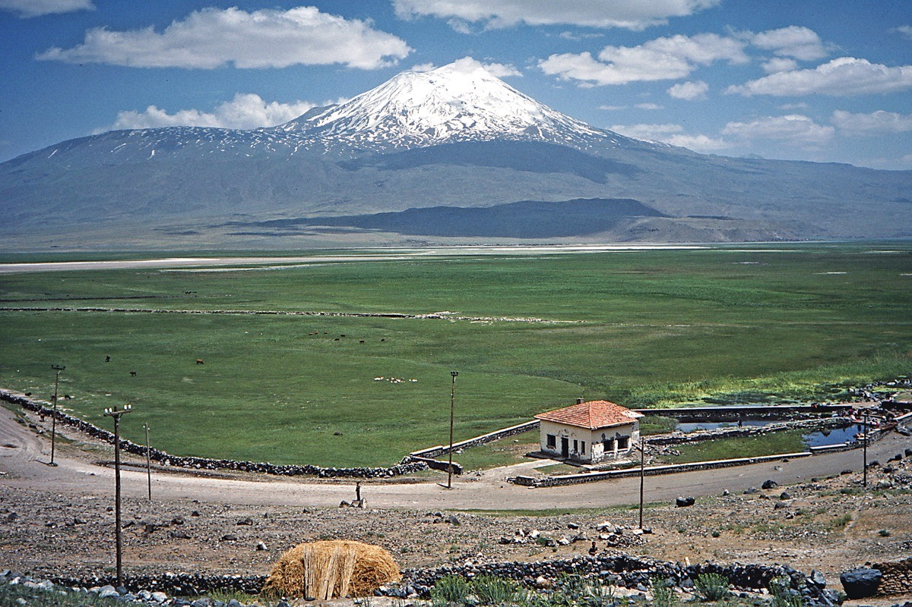
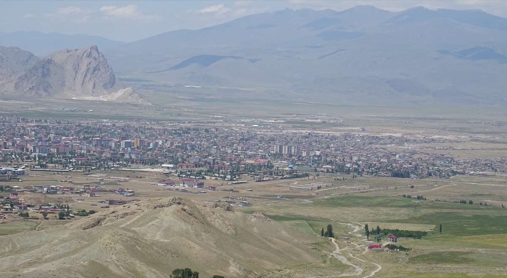
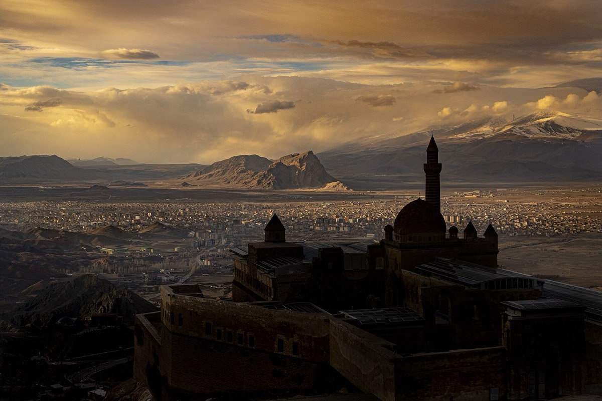

Kültürel Etkinlikler
Memleket geceleri, folklor, müzik ve yöresel tatlar; Doğubayazıt kültürünü başkentte yaşatıyoruz.
Ankara Doğubayazıtlılar Kültür ve Dayanışma Derneği · BAY-DER
İshak Paşa Sarayı'nın, Ağrı Dağı'nın ve Eski Bayazıt'ın evlatları; memleketin sıcaklığını başkente taşımak için bir araya geliyor.
Hakkımızda
Ankara Doğubayazıtlılar Kültür ve Dayanışma Derneği (BAY-DER), 2026 yılında başkentte yaşayan Doğubayazıtlı hemşehrilerimizi ortak bir çatı altında buluşturmak amacıyla kuruldu. Dernek; birlik, beraberlik ve dayanışma duygularını güçlendirmek için çalışır.
Amacımız; memleketimiz Doğubayazıt'ın kültürel değerlerini yaşatmak, bu değerleri Ankara'da yeni nesillere aktarmak ve zor günlerde hemşehrilerimizin yanında olmaktır. Kapımız her Doğubayazıtlı hemşehrimize açıktır; birleştikçe güçleneceğimize inanıyoruz.
Memleketimizin ve hemşehrilerimizin sorunlarının ilgili makamlarda görünür olması, çözüm üretilmesi ve Doğubayazıt'ın tarihî-kültürel zenginliklerinin daha güçlü tanıtılması için projeler yürütüyoruz.
Kurucu Yönetim Kurulu ile Tanışın

Memleket geceleri, folklor, müzik ve yöresel tatlar; Doğubayazıt kültürünü başkentte yaşatıyoruz.
Hasta ziyaretleri, cenaze ve taziye organizasyonu, ihtiyaç sahibi hemşehrilere destek.
Öğrenci buluşmaları, burs ve eğitim desteği; gençlerimizi memleket kültürüyle büyütüyoruz.
Doğubayazıt'ın tarihini, turizm değerlerini ve güzelliklerini Ankara'da ve ülke genelinde tanıtıyoruz.
Ankara'da bir araya gelen Doğubayazıtlılar, dernek kurma kararı aldı.
Kuruluş evrakları Ankara Valiliği'ne teslim edildi; BAY-DER resmen kuruldu.
İlk toplantıda görev dağılımı yapılarak yönetim kurulu belirlendi.
Dernek merkezi, protokol ve hemşehrilerin yoğun katılımıyla törenle açıldı.
Ankara'da Biz
Cumhuriyet'in başkenti Ankara'da yaşamaya, memleketimiz Doğubayazıt'ın kültürünü yüreğimizde taşımaya devam ediyoruz. BAY-DER, bu iki şehri birbirine bağlayan gönül köprüsüdür.

ANKARA
DOĞUBAYAZIT“Ankara'da yaşamak, Doğubayazıt'ı unutmak demek değildir.” Sende aramıza katıl
Memleketimiz
Ağrı Dağı'nın eteklerinde, İran sınırında kurulan kadim ilçemiz Doğubayazıt; İshak Paşa Sarayı, Eski Bayazıt ve Ahmed-i Hânî'nin türbesiyle Anadolu'nun incisidir.




Sen de bu güzelliklerin bir parçasıysan Ankara'da birlikte olalım. Üye olmak için tıklayın →
Kurucular
Derneğimizi kuran, emek veren ve bugünlere taşıyan değerli yönetim kurulu üyelerimiz.
Kurucu Başkan
“Burası hepimizin ortak evi. Sevinciyle üzüntüsüyle Doğubayazıtlı her vatandaşımızın yanında olacağız; kültürel değerlerimizi koruyup gelecek nesillere aktaracağız.”
Başkanımız Zülmat Taşdemir, derneğin kuruluşundan bu yana başkentte yaşayan Doğubayazıtlılar arasında dayanışmanın güçlendirilmesi ve memleket kültürünün yaşatılması için çalışıyor.
Başkan Yardımcısı
Genel Sekreter
Sayman
Yönetim Kurulu Üyesi
Yönetim Kurulu Üyesi
Yönetim Kurulu Üyesi
Yönetim Kurulu Üyesi
Yönetim Kurulu Üyesi
Yönetim Kurulu Üyesi
Etkinlikler & Haberler
Açılış törenine eski bakanlar, milletvekilleri, oda başkanları ve çok sayıda Doğubayazıtlı hemşehrimiz katıldı. Dernek merkezimiz tüm hemşehrilerimize açıktır.
Kültürel etkinlikler, memleket geceleri ve sohbet toplantıları yönetim kurulumuz tarafından planlanıyor. Duyurular dernek merkezi ve sosyal medyadan yapılacak.
Listelerde eksik kalan hemşehrilerimizi derneğimize üye olmaya ve bu büyük ailenin bir parçası olmaya davet ediyoruz.
Üyelik
Üyelik için herhangi bir koşul yoktur; Ankara'da yaşayan, okuyan veya gönül bağı olan her Doğubayazıtlı ailemizin bir parçasıdır. Form doldurmaya gerek yok — tek bir mesajla başlayın.
Aramayı tercih edenler için: Barış Tanrıkulu · 0 507 234 09 28
Mesajınız Barış Tanrıkulu'na (Başkan Yardımcısı) gider.
💬 WhatsApp ile Bilgi Al Üyelik, etkinlikler ve dernek hakkında tüm sorularınızı sorabilirsiniz.İletişim
Yönetim kurulumuzu doğrudan arayabilir ya da sosyal medyadan yazabilirsiniz.
info@ankaradogubayazitlilar.org
Tüm sorularınız için yazabilirsinizAnkara
Merkez adresi yayına alınınca eklenecek